| PA | Elevation | PlantRichness | Habitat |
|---|---|---|---|
| 0 | 302.69 | 4 | Forest |
| 0 | 299.80 | 3 | Forest |
| 0 | 294.75 | 5 | Mixed |
| 0 | 285.91 | 6 | Mixed |
| 0 | 281.66 | 4 | Grassland |
| 0 | 298.42 | 12 | Mixed |
| 1 | 307.54 | 2 | Mixed |
| 0 | 290.88 | 2 | Forest |
| 1 | 308.00 | 3 | Mixed |
| 0 | 314.91 | 1 | Grassland |
Day 1
Data \(\approx\) Information
Usually represented in the form of continuous, discrete or qualitative measures taken on natural or experimental phenomena
| PA | Elevation | PlantRichness | Habitat |
|---|---|---|---|
| 0 | 302.69 | 4 | Forest |
| 0 | 299.80 | 3 | Forest |
| 0 | 294.75 | 5 | Mixed |
| 0 | 285.91 | 6 | Mixed |
| 0 | 281.66 | 4 | Grassland |
| 0 | 298.42 | 12 | Mixed |
| 1 | 307.54 | 2 | Mixed |
| 0 | 290.88 | 2 | Forest |
| 1 | 308.00 | 3 | Mixed |
| 0 | 314.91 | 1 | Grassland |
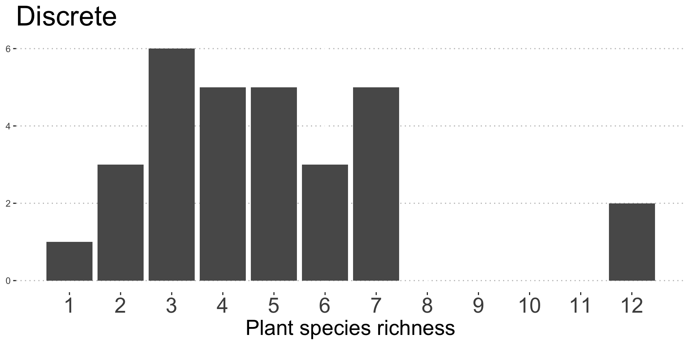
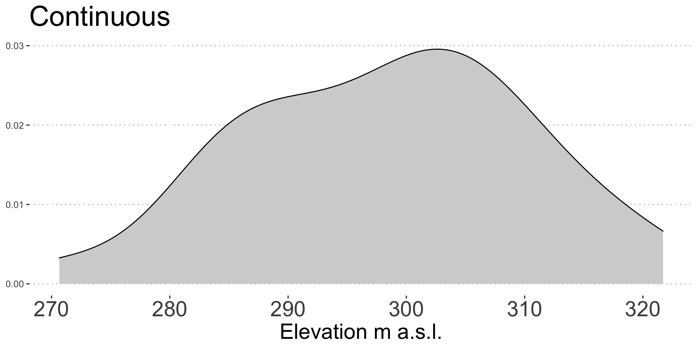
Data are just a incomplete part of the story
Usually, we want to know the full ‘truth’ (and not a part of it)
A MODEL is:
From Ecological models and data in R - Bolker
All models are wrong, but some are useful
(cit. Box)
Focus: parametric models
Ecologists use them for:
We are studying the body size of Gentoo penguins in the Antarctica1
We collect a bunch of data (a sample), which look like this 👇
| ID | BodySize |
|---|---|
| 1 | 5085.467 |
| 2 | 4983.132 |
| 3 | 4384.706 |
| 4 | 4773.966 |
| 5 | 5224.501 |
| 6 | 5272.518 |
| 7 | 4467.005 |
| 8 | 4892.681 |
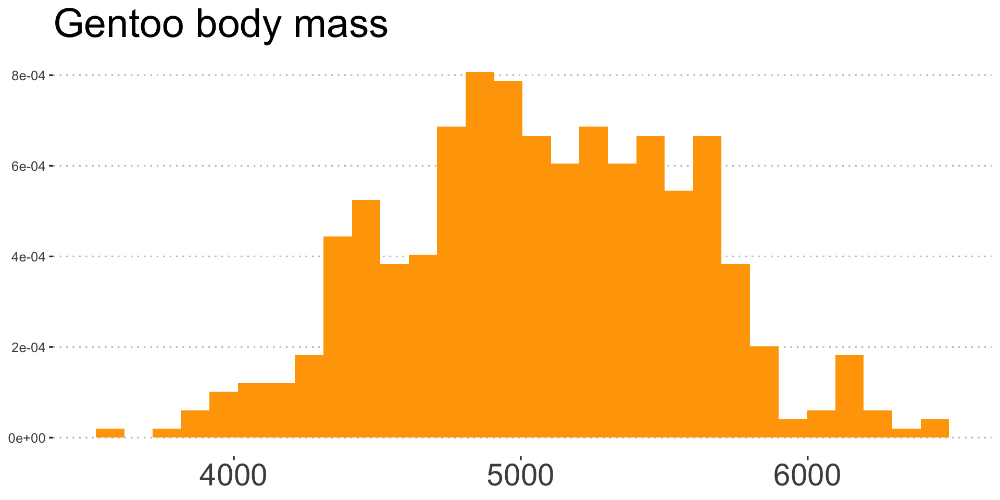
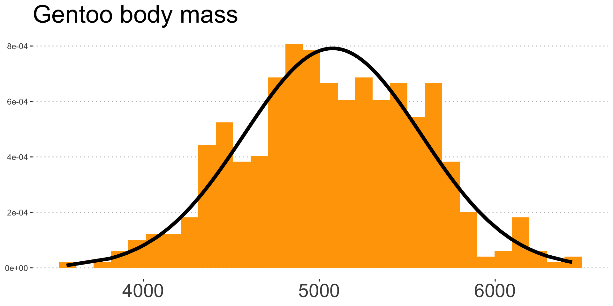
Assumption: Body mass of (all existing) Gentoo’s penguins is normally distributed with some mean and variance
Parametric model: \(Gentoo\hspace{1 mm}body\hspace{1 mm}size \sim \mathcal{N}(\mu,\, \sigma^{2})\)
What I think I am doing
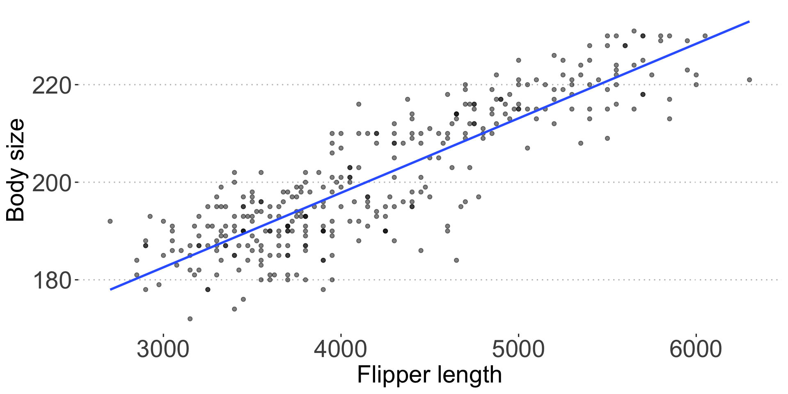
Model:
\(\mu_i = \alpha + \beta \cdot flipper\hspace{1mm}length_i\)
What I am actually doing
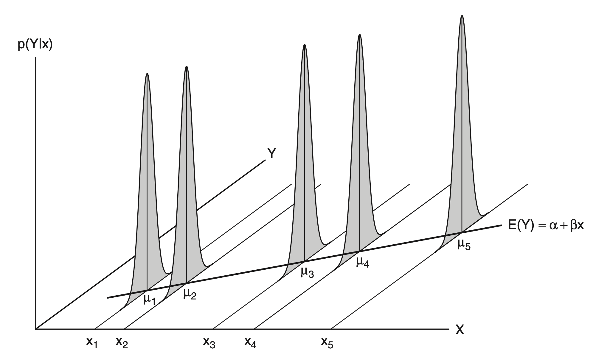
Model:
\(Gentoo\hspace{1 mm}body\hspace{1 mm}size_i \sim \mathcal{N}(\mu_i,\, \sigma^{2})\)
\(\mu_i = \alpha + \beta \cdot flipper\hspace{1mm}length_i\)
Data \(\approx\) Information
We need data to estimate parameters
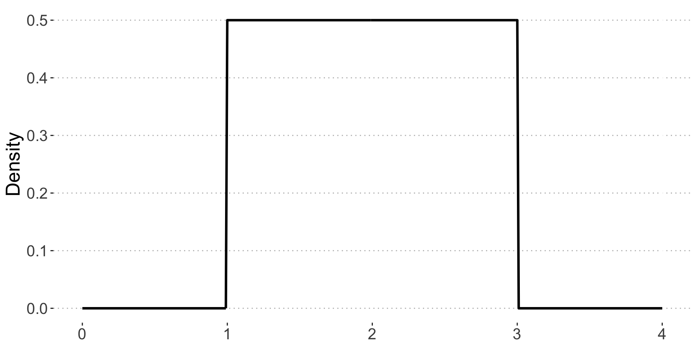
\(X \sim \mathcal{U}(a,\,b)\\,with\hspace{2mm}a = 1\hspace{2mm}and\hspace{2mm} b\hspace{1mm}=\hspace{1mm}3\)
Pdf: \(f(x) = \begin{cases}\frac{1}{b-a} & \text{for } a \le x \le b, \\[8pt]0 & \text{for } x < a \ \text{ or } \ x > b.\end{cases}\)
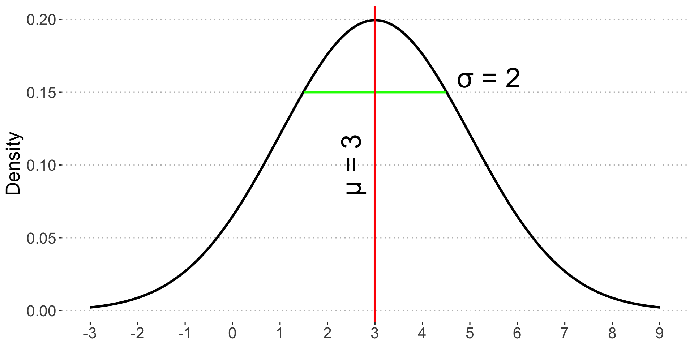
\(X \sim \mathcal{N}(\mu,\,\sigma^{2})\\,with\hspace{2mm}\mu = 3\hspace{2mm}and\hspace{2mm} \sigma\hspace{1mm}=\hspace{1mm}2\)
Pdf: \(f(x) = \frac{1}{\sigma \sqrt{2\pi} } e^{-\frac{1}{2}\left(\frac{x-\mu}{\sigma}\right)^2}\)
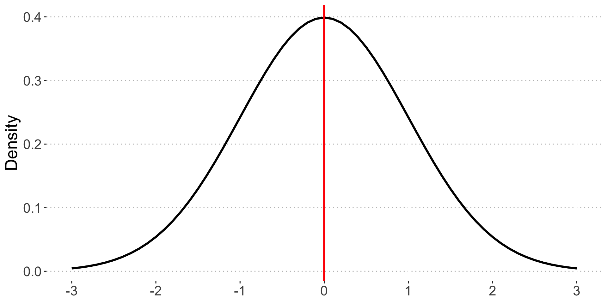
\(Z \sim \mathcal{N}(0,\,1)\)
\(Z = \frac{X - \mu}{\sigma}\\,with\hspace{1mm}X\sim\mathcal{N}(\mu, \sigma^2)\)
Pdf: \(f(z) = \frac{e^{-z^2/2}}{\sqrt{2\pi}}\)
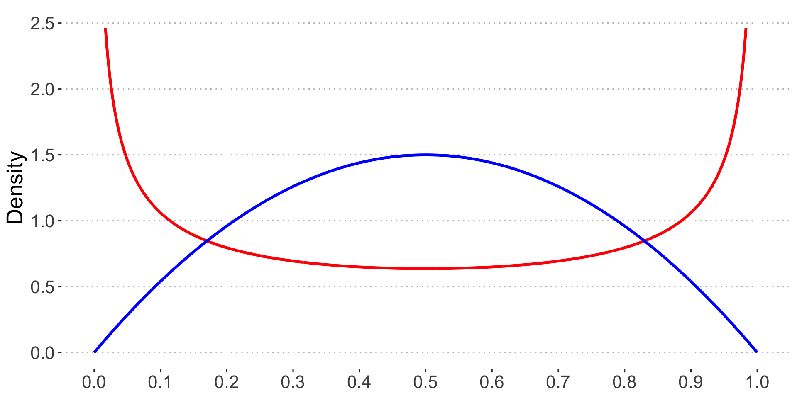
\(X \sim \mathcal{U}(a,\,b)\\,with\hspace{2mm}a = 1\hspace{2mm}and\hspace{2mm} b\hspace{1mm}=\hspace{1mm}3\)
Pdf: Let it be..
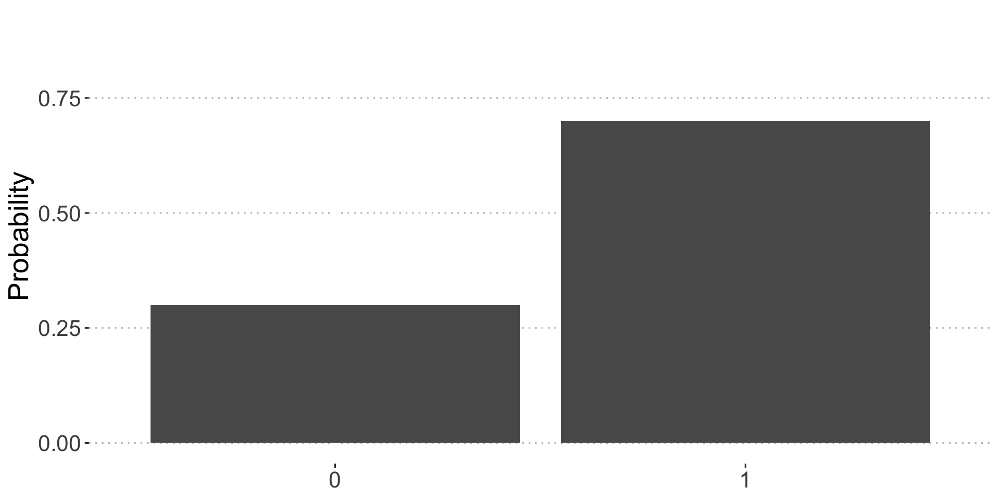
\(Y \sim Bern(p)\\,with\hspace{1mm} Y\hspace{1mm} assuming\hspace{1mm}value\hspace{1mm} 0\hspace{1mm} or\hspace{1mm} 1\)
Pmf: \(Pr(Y) = p^Y(1-p)^{(1-Y)}\)
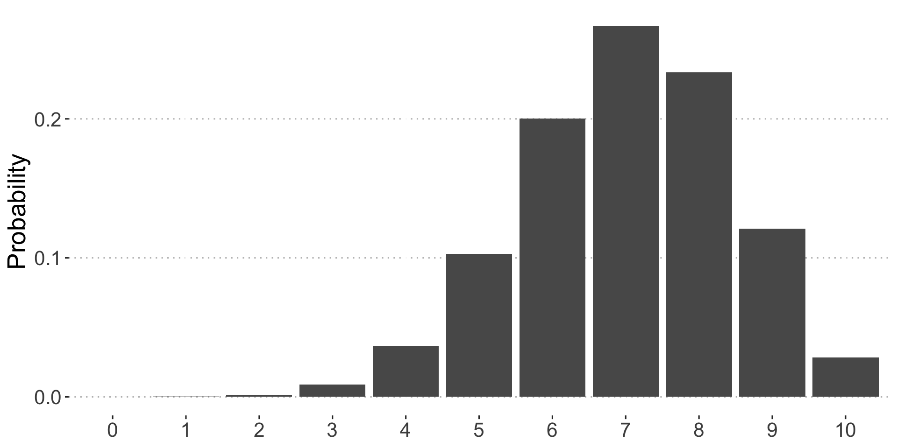
\(Y \sim Binomial(p, N)\\,with\hspace{1mm} Y\hspace{1mm} assuming \hspace{1mm}value\hspace{1mm} from \hspace{1mm}0\hspace{1mm} to \hspace{1mm} or\hspace{1mm} N\)
Pmf: \(Pr(Y) = \binom{N}{Y} p^Y(1-p)^{(N-Y)}\)
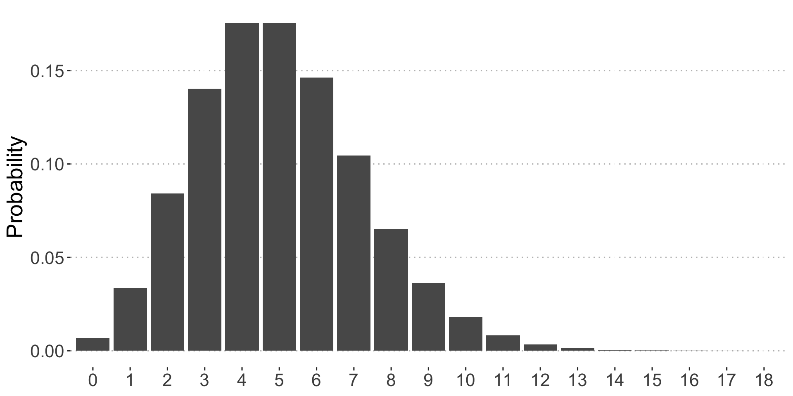
\(Y \sim Pois(\lambda)\\,with\hspace{1mm} Y\hspace{1mm} assuming \hspace{1mm}value\hspace{1mm} \geq 0\)
Pmf: \(Pr(Y) = \frac{\lambda^Y\exp^{-\lambda}}{Y!}\)
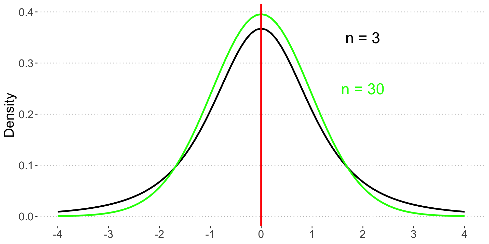
\(T \sim \mathcal{t}(0,\,\frac{n}{n-2})\\,undefined\hspace{1mm}if\hspace{1mm}n<2\)
\(T = \frac{X - \mu}{\hat{\sigma}}\\,with\hspace{1mm}X\sim\mathcal{N}(\mu, \sigma^2)\)
Pdf:
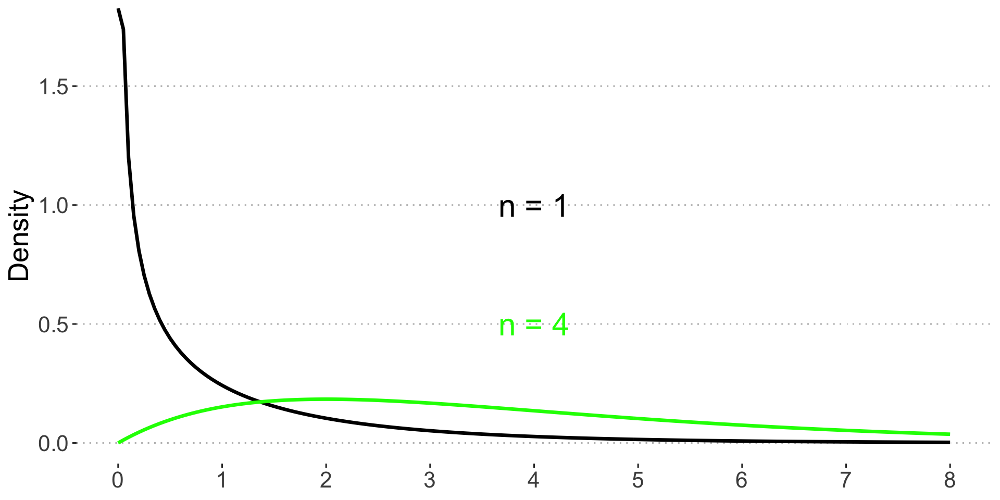
\(Q = \sum{Z^2}\)
\(Q \sim\chi^2\)
Pdf: 🙅♀️